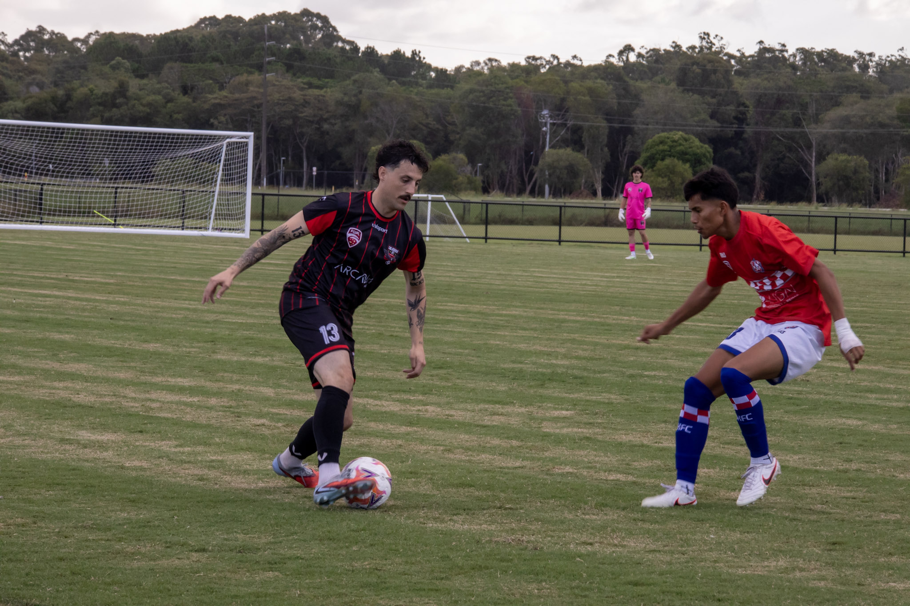

Caloundra win round 3 game in Australian soccer's Football Queensland Premier League 2 competition
2026, March 18

Caloundra win round 3 game in Australian soccer's Football Queensland Premier League 2 competition
2026, March 18
Australia
Caloundra have won their round 3 Football Queensland Premier League 2 game against Pine Hills 5 goals to 2 at Meridan Plains, Queensland, Australia on Sunday."Two [wins] from three [games]" said Caloundra captain Kaine Frew. "I think we'll probably be in the top four now. Not a bad start. It's still very early days. Yeah, you can't get too ahead of yourselves. I think you've just got to take it week by week for the moment."
Riley Campbell opened the scoring for Caloundra in the second minute. Aaron Doherty levelled the score two minutes later. Alex Witte took Pine Hills ahead in the eleventh minute. Darryl Barton brought the scores level again in the thirteenth minute. Barton scored his second goal to retake the lead do Caloundra in the twenty seventh minute. Caloundra lead three goals to two at the break.
Jake Debbage added Caloundra's fourth in the fifty first minute before Mackenar Bradfield took the score line to five goals to three in the ninetieth minute.
"It was a pretty even game, first half," said Pine Hills assistant coach Daniel Cunha. "[We] conceded three goals. Lazy goals, in our opinion. But we managed to bounce back with two goals. Managed to stay in the game, but yeah, second half with early, conceded early goals, so that was it for us."
Caloundra host Mitchellton on Saturday, while Pine Hills travel to Samford.